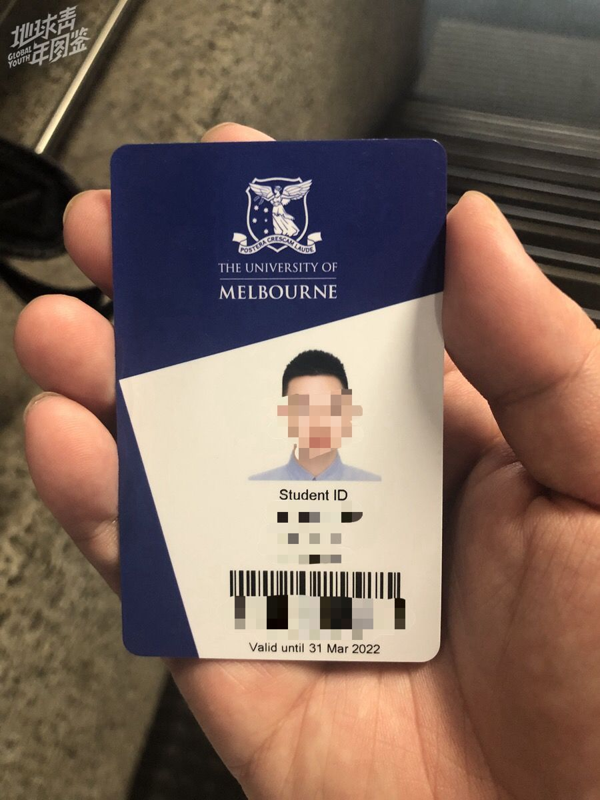
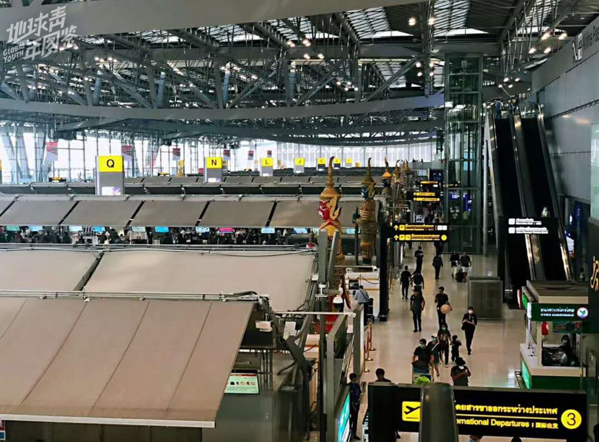
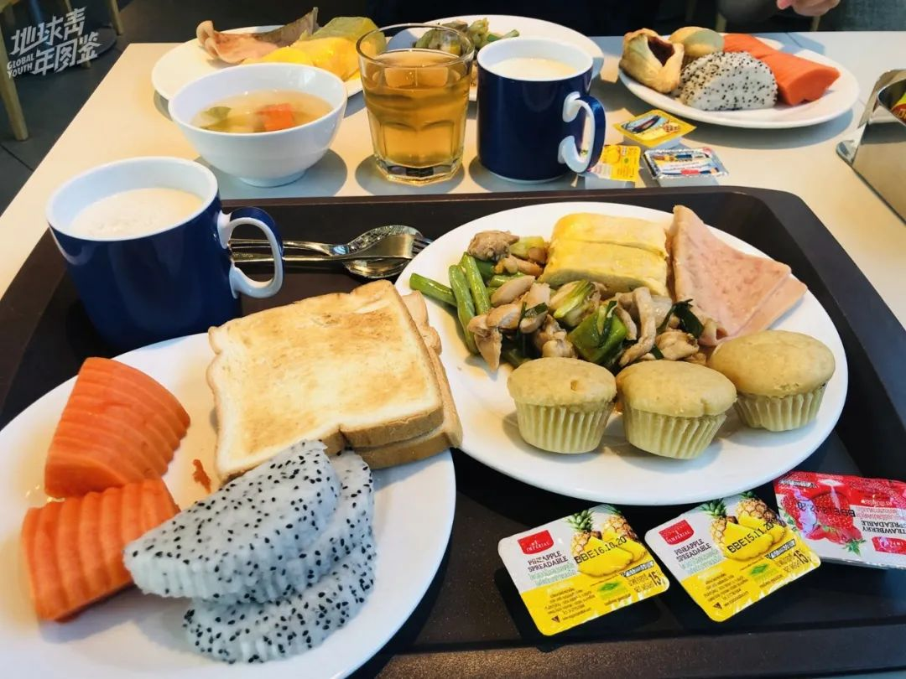
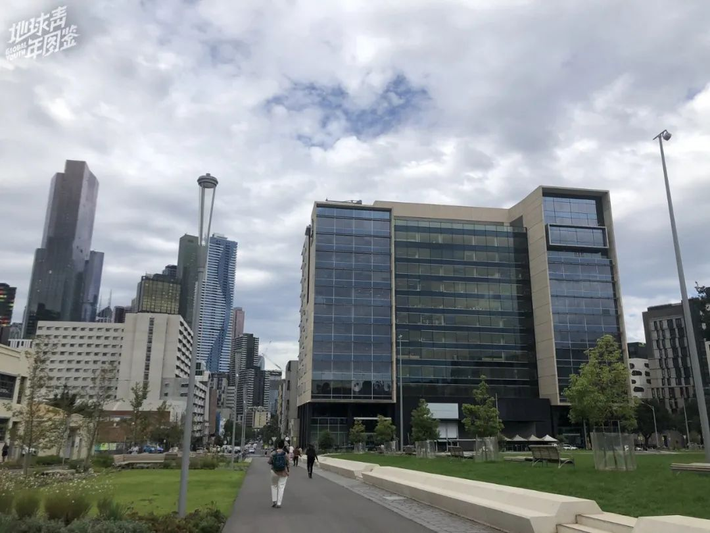
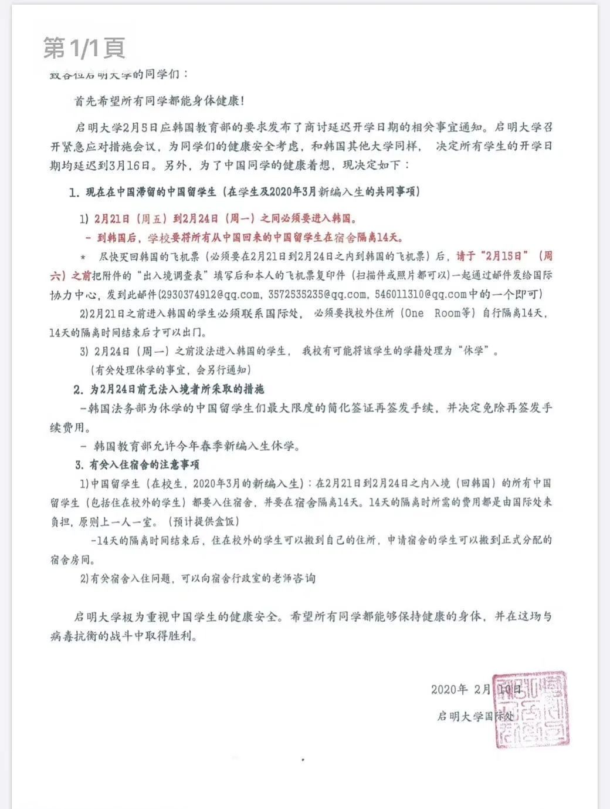
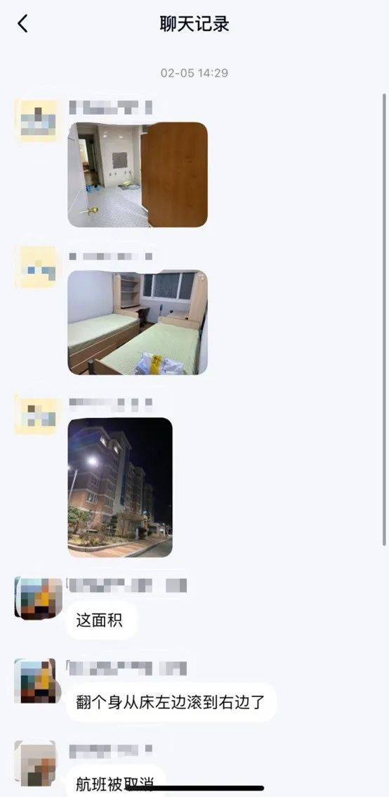
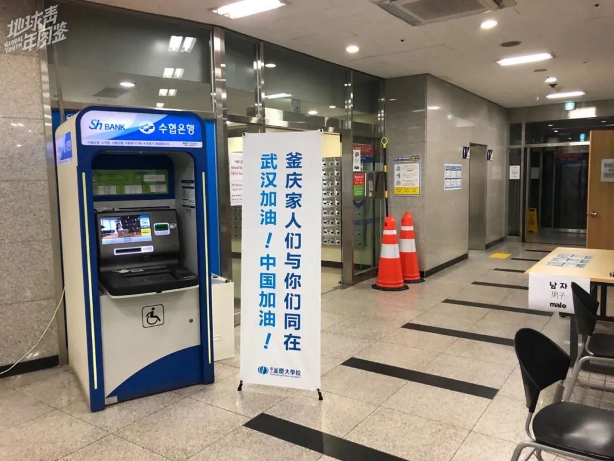
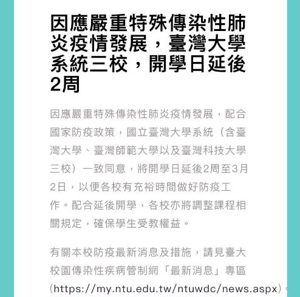
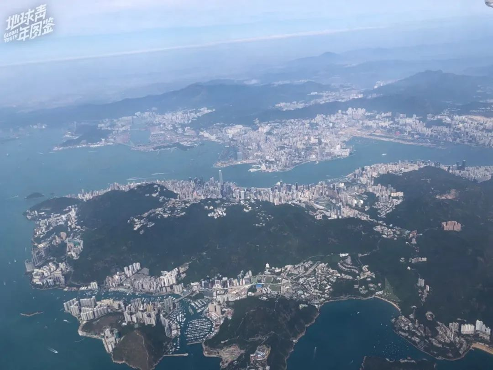
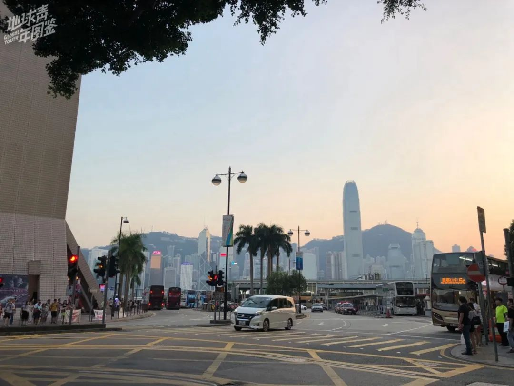

几十万学费变成了买网课，被疫情阻断的留学路
原文链接 备份链接 大学的意义，不仅仅在于一节节课程，还在于学校提供的各种公共教学设施和公共生活空间。学生们身体的不在场，不可避免地让大学的意义变得模糊。 文 | 田蔚琪 陈星萌 林浩瑶 编辑 | 小豆 二月底本是澳洲大学秋季开学的日子， …
以下文章来源于地球青年图鉴 ，作者地青


在持续蔓延的新冠肺炎疫情之下，中国留学生们的求学路相比往常，困难重重。有人为了按时返校，正在尝试辗转第三国避开入境禁令，也有人只好被迫休学。与之而来的，还有高昂学费的压力，房租的损失，延期毕业的风险……

△ 王小门和爸妈在郑州机场
2月7日早晨，河南驻马店起了大雾，高速封路到中午才开放。等到晚上，天气预报提醒，明天还有出现大雾的可能。怕耽误第二天的飞机，王小门的爸妈临时决定今晚就送他出发去郑州机场。
驻马店市位于河南南部，距离武汉约200公里，2月7日，王小门离开时，驻马店市累计确诊病例113例。除了市区，乡镇都已封闭道路，这一次离家是他二月来第一次出门。家门口那家火爆的鱼火锅店没有像往年一样排起长队，大门紧闭，街道上也只有零星路人。
驱车在空巷，再转到高速上，直到离郑州机场最近的服务区，王小门数了数，遇见的车不超过20辆。往日拥挤嘈杂的服务区，在这个普通的夜晚空荡安静。王小门和爸妈在服务区休息到了2月8日早上五点，手机上的道路提醒显示，驻马店的高速因大雾封路了。爸妈为昨晚提前出发的决定长舒一口气，这些天来，把儿子送出去是家里的头等大事。

△ 王小门的学生证
王小门是澳大利亚墨尔本大学的研究生新生，在去年12月份，他就买好了今年2月21日从上海浦东直飞墨尔本的机票。按照原计划，他会在21日抵达墨尔本，然后参加24日开始的迎新周活动。
不料，澳洲总理莫里斯在2月1日出台入境禁令，“从即日起，在中国大陆的非澳大利亚公民（永久居民除外），在离开或过境中国大陆的14天内，不得进入澳大利亚”。早前，澳媒宣传不会有类似政策，但在宣布旅行禁令后的第二天，王小门的航班就被取消了。
一切都很突然。
据澳洲教育部统计，因这一政策滞留国内的中国留学生超过10.67万人，留学生们只好选择自救。王小门在微博看到，有着同样遭遇的澳大利亚留学生浣洱决定从泰国待14天再“曲线入澳”。 秉承“在第三国待满14天就可中转回澳”的规定，签证成本较低的泰国成为留学生们的热门中转地。
2月4日，浣洱顺利抵达曼谷，发微博解答大家的疑问并告知一切顺利。有人留言呼吁拉个群，王小门就是这样进群了，他也做出了同样的决定。就像浣洱抵达曼谷时发的那条朋友圈，“犹豫就会败北”。

△ 泰国机场

△ 王小门即将离开在泰国入住的酒店
2月5日晚，王小门匆忙买好了2月8日从郑州中转上海飞曼谷的机票。早在去年双十一他就买好了今年二月从上海飞泰国的机票，预备玩一趟，但因为疫情航班被取消了。原本往返2000元左右的机票，这次单程就花了1900元。
登机时，地服人员通知，郑州机场已经全部取消廊桥登机，每架飞机都要在偏远地方经过消毒后，由摆渡车接送乘客登机。2月8日晚十点，飞机落地曼谷机场。因为泰国落地签只有15天，所以王小门决定等过了零点再过关，“我们要尽量在第三国待久一点，才能最大程度满足澳洲14天的要求，因为我觉得澳洲海关数学一向不好”。
曼谷的机场工作人员态度友好，机场人潮如往常，其中的中国面孔遮挡在口罩后面，很好辨认——在曼谷机场戴着口罩的，大部分是中国游客。截至2月25日，泰国已经确诊37例，新闻和公共交通的播报里也放送着防护疫情的提示，这里和国内一样口罩脱销，但并不是人人出门都会戴好口罩。

△ 王小门在泰国隔离期间的酒店早餐
泰国的口罩供应紧缺是王小门没有料到的，幸好和澳洲的室友碰上了面，室友准备充足，他们俩分了分口罩，刚好够戴到入境澳大利亚。这是王小门第二次来泰国，上次是自在的旅游，这次大部分时间都在酒店隔离，“每天的盼头只有早餐”。有网友调侃莫里森是泰国旅游大使，“因为中国疫情的影响，给全世界的旅游业带来了沉重打击。不过最近不少留学生选择赴泰，给濒危的泰国旅游业带来一定程度的复苏”。
第一次赴泰时，曼谷一家大型免税店的免费餐券让王小门心心念念，每一个自由行的中国游客都会被赠300泰铢美食券，并且报销往返打车费。这一次也不例外，拿着赠送的餐券，王小门再次来到免税店，这是他为数不多离开酒店的活动。不过这一次，他没有再购物。
王小门所在的泰国中转群里有将近400人，而这样的群不只一个。他推测，现在在泰国等待中转的中国留学生少说也有几千人。刚刚到达的那几天，他和室友还想过去逛一趟周末集市，看到里面人挤人，只有大概一半的人戴着口罩，便赶紧出来了。2月18日，曼谷市中心发生枪击案，他们更不敢离开酒店，基本在便利店解决晚饭。

△ 泰国街头“中国加油”的标语
从第三国曲线入境澳洲的学生有很多，有一部分人像王小门一样宅在酒店等待十四天后被允许入境，也有一部分人将泰国之行当作一次度假四处游玩，但还有些人选择留在国内的家中张望等待。
Eva就是选择等待的一员，她是澳大利亚莫纳什大学的二年级研究生。她觉得现在全球的疫情形势并不乐观，便没有选择中转第三国入境，这段时间她一直在等澳大利亚海关禁令的结束，直到2月20日，澳洲宣布将旅行禁令再延长一周至2月29日。
如果澳洲的海关禁令顺利结束，她将按时回到墨尔本，自行隔离14天以后正常上课、正常毕业；但如果无法结束，则可能要过半年的间隔年，原本3月开学的学期要延迟到7月。

△ 王小门拍下的墨尔本大学法学院大楼
所有选择前往第三国中转的学生都承担着时间、精力、金钱打水漂的风险，因为禁令可能突然更改，第三国政策可能被取消，这也是Eva犹豫的原因。留在国内的她需要克服时差远程参加在澳洲的实习，还要负担房租和网费。她与学校沟通了自己的情况，最终学校给所有人发了邮件，延迟至3月16日开学。
对于即将毕业的学生来说，这一场“曲线入澳”的成功更加重要。因为如期入学意味着如期毕业，不必浪费整整半年的时间，也不必担心耽误工作和签证过期。所以，不少留学生们选择中转第三国赌一把。
Lan和女友决定从杭州出发前往泰国，再中转入澳，因为担心无法正常毕业影响工作，也不好意思长时间麻烦熟人帮他照看猫咪。原本满怀期待从澳洲回来和老友相聚、参加朋友的婚礼，这些活动也都取消了，两个人便一起来到了泰国。和很多犹豫着想趁这次假期多陪陪父母的留学生不同，Lan的妈妈在卫健委工作，这个对旁人来说最长的假期，却是他和妈妈相处时间最短的寒假。
澳洲入境情况如何，对于大多数在第三国中转停留的学生来说是个未知数。虽然留学生们大多理解澳洲政府为了保障本国民众安全，但是一切来得太突然了。目前对于第三国入境方案，澳洲政府、教育部和海关一直未达成统一意见，让许多留学生都不知所措。

△ 王小门在墨尔本大学的宿舍窗台景色
王小门庆幸自己遇到了好房东，在得知他因为疫情无法按合同日期开始居住后，房东承诺等他入住后再算房费。他也有听闻，当地居民因为病毒而产生对于亚洲面孔的歧视，虽然忐忑，但还是希望能够顺利开始全新的研究生旅程。
2月19日，浣洱在泰国中转群里艾特所有人，“群主今天冲了”，之后顺利到达墨尔本。出机场时，她觉得这是五年来最爱墨尔本的一天。王小门和室友看到消息就像吃下了一颗定心丸。六天后，他和室友也顺利抵达墨尔本。
而在另一个留学生返校防疫互助群里，想要中转赴美的学生们在咨询组团。一位持有加拿大签证的同学想要借道加拿大。虽然加拿大没有严格限制入境的禁令，但美国自美东时间2月2日下午5时起，就禁止过去14天内访问过中国的外国人入境。他叹道，“国内情况虽然好转，美国禁入令还是遥遥无期。”

1月23日，韩国人在青瓦台主页发起请愿，请求政府禁止中国人入境。请愿的截止时间为2月22日，如果人数达到20万，韩国总统就必须回应。2月2日，大韩民国官方推特发布了有关中国入境韩国的相关政策，其中有提到，“2月4日0点起，14天之内滞留或访问过中国湖北省的外国人，禁止入境韩国”。

△ 启明大学国际处给留学生下发的文件截图
在疫情高峰期间，韩国启明大学的大三学生林慧（化名）收到学校邮件，要求留学生必须在2月21至24日内到达韩国隔离时间14天，并建议由于疫情原因无法按时到学校的学生直接休学。林慧的家乡位于凉山彝族自治州西昌市，按照原计划，她会从成都出发到韩国，现在大巴、火车停运，飞机是她唯一的选择。“先从西昌飞西安，在西安候机至少六小时再飞青岛，转机到首尔，然后坐至少五小时的大巴到大邱市，中间得住两晚酒店。“
因为多次转机，感染风险增大，林慧和校方反映了问题，至今都未得到回答。启明大学延迟至3月16日开学，算上隔离的14天，校方要求留学生2月24日前必须达到韩国，这让林慧感到困惑。“学校直接让无法达校的人休学，没有想过用网课等方式为学生提供学习的帮助，保护留学生的合法权益。”
虽然学校为留学生提供了一人一室一厕的隔离宿舍，但在接收到通知后，林慧开始纠结是否要休学。父母担心她在路途中感染，启明大学附近也出现了疑似的病例。2月18号，林慧在摇摆不定后最终决定休学，接下来长达半年的休学改如何度过？她一下子迷茫了。
两天后，大邱发生新冠肺炎超级传播事件，导致1001人被隔离，林慧在家里盯着手机屏幕看报道，韩国疫情的爆发让她感到害怕，同时她也庆幸自己所做的决定，截止2月25日，启明大学准备休学的中国留学生已增至约300名。

△ 国立釜庆大学学生群截图
1月下旬，位于釜山市的国立釜庆大学发送邮件调查了中国留学生的情况，并在2月3日发邮件告知给学生准备了隔离宿舍，当天有留学生被要求搬去隔离宿舍入住。身在北京的该校大四学生小洛（化名）在群里看到了宿舍环境相关的图片和视频，每个人都有独立的房间，但6至12人得共用卫生间及浴室，这样具有感染可能性的隔离环境引起了大家的不满，不过小洛心情没有受影响，她相信学校会给出合理的解决方案。

△ 国立釜庆大学隔离宿舍大楼内放置的标语
通知发布后， 学校的学生会和国际交流部的老师开始联系中国驻釜山领事馆，领事馆介入与学校商谈。2月5日，韩国教育部开会，要求各大学尽量延期开学，同时要求中国留学生进行自我隔离。首尔地区的大学，大多都无法提供额外的隔离宿舍，所以让留学生在酒店等地进行自我隔离。“而我们学校的宿舍太多了，于是发生了这件事”，小洛说，“校方最开始的出发点是很好的，但没有考虑到隔离条件”。
经过领事馆的介入以及中国留学生会的帮助，2月11日，学校决定提供校内的世宗一馆作为隔离宿舍，一人一间、独立卫浴，房间里还有路由器、24小时的地暖空调，每天需要两次体温检测。

△ 小洛来到空荡荡的首都机场

△ 小洛目前独自隔离的宿舍
2月14日，小洛从北京出发，中午抵达韩国，到了学校后，直接住进了隔离宿舍。14天隔离的房间费用由学校支付，餐费需要学生自费，但有一定程度的补助。学校还联系了中国餐馆制作中餐，小洛对隔离宿舍很满意。为了腾出隔离宿舍，原本居住在内的韩国学生被迫搬到另外一栋宿舍，这样的举动令一些韩国本土学生不满。
根据韩联社报道，韩国总统文在寅23日下午宣布，决定将新冠肺炎传染病危机预警级别上调至最高的“严重”级别。同日，韩国教育部宣布全国学校推迟1周开学，这是韩国首次在全国范围内推迟学校开学。目前，韩国除了湖北籍以外的中国居民都可以入境。
截止2月25日，韩国新冠确诊增至1146例。小洛身边有已经在宿舍隔离的学生决定休学，马上回国。小洛觉得自己防护用品充足，可以继续留在学校隔离。她的朋友中，还有人因为马上要大四毕业或不愿休学，继续从国内前往韩国。


△ 桃园机场的告示
回来不久，疫情蔓延，相关的报道频繁出现，思宇赶紧囤积了一些口罩。1月23日，威海出现了首例确诊，他发现市里已经买不到合格的口罩了，父母也开始担心疫情的发展，取消了过年期间的一切聚会和活动，想让他赶紧回台湾。
台湾的朋友和老师陆续给他打电话询问情况如何，是否需要帮忙采购物资。那时，台湾已经限制湖北陆生入境，其他省份的陆生暂时不受影响。身在山东的思宇觉得不要紧，考虑到改签机票比较贵，就没有改签。1月26日，台湾宣布因疫情严重，所有陆生暂缓入境。思宇才发现，他回不去了。

△ 台湾大学延期开学的通知

△ 思宇的研究桌
暂缓入境之后，台大将开学日期推迟到了3月2日，并做出协调方案。学校开始联系陆生，提出诸如学费减免，远程授课的解决措施。思宇是工作两年之后才读的研究生，接下来这个学期的必修课，一年只开一次，他担心影响毕业进度。
在离开台湾的前一天，他刚刚获得了学校的独立研究桌，有了自己的办公室，兴高采烈地把研究需要用到的物品都搬了过去。万万没想到，一次疫情袭来，不仅在短时间之内无法返回台湾读书，无法使用研究室，甚至还可能延迟毕业。

△ 米朵去年拍摄于回港的飞机上
同样无法准时回到学校的，还有在香港教育大学读一年制硕士的米朵。原计划2月5日从宁波回香港，受疫情影响，3月中旬前米朵都没办法回学校了。虽然她有香港居民身份，“想要回学校还是能回去的，但目前浙江省飞香港的航班几乎没有，自驾去上海又困难重重，更困难的是入港要强制14天居家隔离。我在香港本来就是鸟居了，14天不出门简直是酷刑”。
现在米朵不仅要承担一笔不小的房租损失，还担心延课导致找工作受阻。去年因为香港示威者暴乱，米朵上了几次网课，这次因为疫情，原本面授的课程也可能会改为网课。

△ 香港街景
香港八大院校有学生主张“退学费保学历”，米朵曾和内地学生一起写邮件建议学校减免学费。校方给出的方案是延后交学费的日期（原定2月14日，延后至3月31日），但并没有承诺减免学费。许多线下课推迟了半个月，即便恢复授课，也只是网课。除此之外，米朵还有一场入岗培训，她不知道自己能否准时参加。
2月4日凌晨，香港政府实行关闭出入深圳各大口岸（除深圳湾和港珠澳大桥）的举措，米朵学校的群里有人解读香港入境政策，建议在深圳工作的港人和在香港工作的内地居民辞退工作。米朵理解香港闭关口岸的举措，“因为香港人口密度非常非常大，老龄化程度又非常高，如果疫情在香港爆发势必是毁灭性打击，但是给出辞退工作的建议，单看文字就感觉非常糟心”。
对于香港，她已经失去的原来的热忱。

子寒是在日本专门学校就读的一年级新生，家在武汉的她因为上课没有回家过年。1月18日，在武汉的家人提醒她屯好防护用品和食物，当时日本情况并不严重。之后，线下药店口罩脱销，亚马逊上价格迅速上涨。
子寒几乎每天早上8点至9点都要坐东京地铁副都心线去学校上课，这条经过池袋，新宿三丁目，明治神宫前（原宿）和涩谷几个大商业圈的地铁线，几乎每天都是人贴着人的拥挤。尽管新闻和地铁广播提醒大家注意防护、减少外出，早高峰时地铁上的乘客并没有减少，只是大部分人和子寒一样戴起了口罩。
受到更大影响的，还有迟迟没有等到签证下签的小龙。小龙从大一开始准备去日留学，一年时间考下了日语N1，考了数次托福和GMAT才拿到了满意的成绩，终于在大四拿到早稻田大学的录取通知书。原本今年2月她应该收到从日本发出的在留表，拿着它去办理学生签证，4月去报到。但现在她的在留表姗姗来迟，大使馆还未开始受理材料，签证不知何时才能下发。小龙不怕没学上，只是担心不能赶上新生周的活动，对于新的环境和生活还需要适应时间。

△ 大阪电车站
同样在等在留表的团团则更加焦虑。她在武汉的一所小学一边教书，一边申请大阪的语言学校，结束了上学期的教学任务、拿到录取通知后，她便递交了辞职申请。这个寒假她回到湖北老家咸宁，等着在留表寄达，准备签证，期待着去日本之后，为申请教育学硕士做准备。然而因为疫情形势严峻，离武汉只有100公里的咸宁已经封城一个月了。日本也发布入境政策——“自2月13日零时起，持中国湖北省、浙江省签发护照者及入境日本前14日内曾到访湖北省、浙江省的外国人原则上无法进入日本”。
许多申请私立语言学校的学生在和学校协商开学时间，但团团申请的是公立学校，她担心“学校没有那么好商量”。 截至2月25日，日本的确诊病例已经达到862例，如果四月疫情还不好转，无法顺利入学，她很有可能要再次申请十月份入学。递交辞职申请没多久的团团，面对这样的转变百感交集，困在咸宁家中，思索着可能需要再找一份临时的工作。
文中王小门、浣洱、Eva、Lan、林慧、小洛、米朵、子寒、团团均为化名。
*****图片均由受访者提供*****
作者 | 易琬玉
*编辑 | 图拉*
实习生 | 匡若彤
凤凰新闻客户端 凤凰网在人间工作室出品


新型肺炎疫情牵动人心，
《在人间》现面向全国网友征稿：
（一） 疫区影像日记
如果你身处疫区
请你用照片（视频）和文字记录
你所听闻和见到的一切
照片不少于3张
文字不少于300字
投稿方式：微信联系人间君（zairenjianliving）
（二）抗击疫情真实故事
无论你是一线医护人员、志愿者、
确诊或疑似患者及家属、已治愈出院人士等等，
如果希望讲述疫情相关经历，
请微信联系人间君（zairenjianliving）

原文链接 备份链接 大学的意义，不仅仅在于一节节课程，还在于学校提供的各种公共教学设施和公共生活空间。学生们身体的不在场，不可避免地让大学的意义变得模糊。 文 | 田蔚琪 陈星萌 林浩瑶 编辑 | 小豆 二月底本是澳洲大学秋季开学的日子， …
原文链接 备份链接 应该做一个自私的人，还是坚持自己：做一个对社会有用的人？ 口述 | 高 集 整理 | 沈 林 今天是我自愿隔离在家的第14天，按理说，我已经可以正常出门了。但是最近发生的事，让我的心情很复杂。 我叫高集，20多岁的时 …
原文链接 备份链接 上海市家协从防疫之初，就明确了“防疫情”和“保刚需”这两个目标。此次疫情也充分反映出家政行业的特殊性，无论是马上要实施的《上海市家政服务条例》，还是去年国务院提出的“促进家政服务业提质扩容36条”都是希望家政行业能够尽 …
原文链接 备份链接 “ - 疫 情 之 下 - 如果没有按下全国的紧急暂停键，所有居民足不出户，所有像老陈这样的物业人员全力守护的最后一公里，也没有现在渐近的明朗和希望。 ” 1 大年30那天中午，重庆渝北某小区的物业管家老陈在家和家人 …
原文链接 备份链接 从一开始，余昌平就想过自己可能会被感染。他是武汉大学人民医院呼吸与危重症医学科的医生，疫情发生后，他成为医院冠状病毒防治专家组的成员。 专家组成员被感染？听起来有点严重。余昌平觉得很正常：“接触那么多病人，总是会感染 …